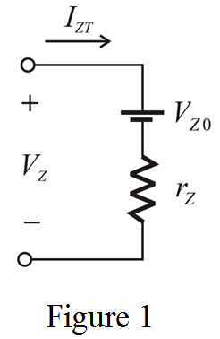

Apply Kirchhoff’s Voltage Law in the model of the Zener diode circuit.
Substitute for  , for
, for  and
and  for
for  .
.
Therefore, the value of the Zener voltage,  is
is  .
.
Draw the model of the Zener diode.

Apply Kirchhoff’s Voltage Law in the model of the Zener diode circuit.
Substitute for , for and for .
Therefore, the value of the Zener voltage, is .
Calculate the Zener voltage at a current of  .
.
Substitute for  ,
,  for
for  and
and  for .
for .
Therefore, the value of the Zener voltage,  at a current of
at a current of  is .
is .
Calculate the Zener voltage at a current of .
Substitute for ,  for and for
for and for  .
.
Therefore, the value of the Zener voltage,  at a current of
at a current of  is .
is .